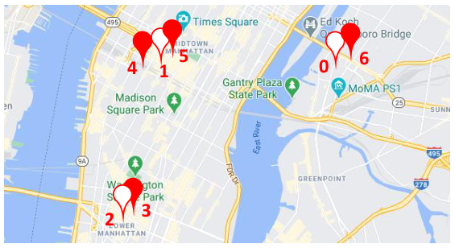
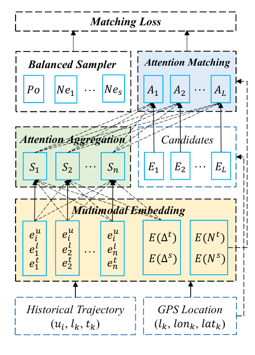

STAN: Spatio-Temporal Attention Network for Next Location Recommendation (面向下一地点推荐的时空注意力网络)
- 会议/期刊: WWW 2021
- 作者与机构: Yingtao Luo (University of Washington)；Qiang Liu (CASIA/UCAS)；Zhaocheng Liu (Renmin University of China)
- 推荐链路定位: 召回
- 研究方向: 时空轨迹与POI本地生活推荐 / 序列与会话推荐
- 论文原文: https://arxiv.org/abs/2102.04095v1
- 开源代码: https://github.com/yingtaoluo/Spatial-Temporal-Attention-Network-for-POI-
TL;DR (1分钟核心速览)
本文针对下一POI推荐中非相邻地点/非连续访问相关性、层级网格离散化损失距离、PIF被注意力归一化抹平三个痛点，提出时空双注意力STAN：用全轨迹相对时空矩阵注入自注意力，先聚合再匹配，并以平衡负采样训练。在Gowalla/TKY/SIN/NYC上采用按用户留一式的全库Top-k Recall@5/10评估，较GeoSAN等SOTA提升9.12%–17.04%。
Background & Motivation (背景与核心矛盾)
- 主流范式: 下一POI推荐由RNN/自注意力序列模型主导；STRNN、Time-LSTM、STGN用相邻访问的时空间隔，GeoSAN用层级网格+自注意力做轨迹内交互。
- 前人局限: 多数模型只建模“当前步与下一步”或连续访问的间隔，难以利用几天前、空间较远但功能相关的餐馆/商场关系；层级网格只聚合邻近格子，无法感知精确GPS距离。
- 核心洞察 (Key Insight): 用户移动规律更多由功能相关、时空非连续的访问决定；重复访问频率（PIF）是强先验，但RNN记忆压缩与softmax归一化会把它弱化。
- 本文切入点: 将轨迹内所有签到两两相对时间/距离与候选-历史时空关系显式注入两层注意力，并用“先聚合全部签到、再逐候选匹配”的结构保留PIF。

Method (核心方法设计)
1. 整体框架 (Overall Architecture)
STAN把每个签到表示为 \(e_r=e_u+e_l+e_t\)，其中时间按周内168小时离散以保留周期。由GPS与时间戳构造轨迹内空间/时间关系矩阵\(\Delta^s,\Delta^t\)和候选-历史矩阵\(N^s,N^t\)，经连续单位嵌入或线性插值得到稠密时空偏置。自注意力聚合层以因果Mask更新每个历史签到；匹配层再将全部更新后的签到与\(L\)个候选逐一匹配，保留PIF。训练用1正\(s=10\)负的平衡采样器，推理时直接对全库\(L\) 打分取Top-k。
flowchart TD
A["用户/地点/168维时间嵌入 + GPS与时间戳"] --> B["轨迹内与候选时空关系矩阵"]
B --> C["连续单位嵌入/线性插值"]
A --> D["自注意力聚合 (时空偏置+因果Mask)"]
C --> D
D --> E["候选匹配注意力 (保留PIF)"]
E --> F["平衡采样交叉熵训练 / 全库Top-k推理"]
2. 关键设计拆解 (Key Designs)
- 连续时空关系嵌入替代网格离散化：痛点在于网格只表达邻接、不表达距离。STAN对 \(\Delta^t_{ij}=|t_i-t_j|\)、\(\Delta^s_{ij}=\mathrm{Haversine}(GPS_i,GPS_j)\)使用单位嵌入\(e_{\Delta^t_{ij}}=\Delta^t_{ij}\times e_{\Delta t}\)（空间同理），也给出上下界插值近似。这样既稠密又保留精确间隔，缓解时空矩阵稀疏与距离不敏感问题。
- 双层注意力聚合+匹配以保留PIF：第一层计算 \(S(u)=(M\odot softmax((QK^T+E(\Delta))/\sqrt{d}))V\)，让任意两个签到点对点交互；第二层计算\(A(u)=Sum(softmax((E(l)S(u)^T+E(N))/\sqrt{d}))\)。由于所有历史签到表示均参与候选匹配，重复访问可在匹配中持续加权，而非被压成单一向量。
- 平衡采样器与推理开销：普通交叉熵需对 \(L-1\)个负例求和，二分类采样又浪费大量未标注候选。STAN每步采样\(s=10\)个负例，损失为\(\mathcal{L}=-\sum_i\sum_{m'}[\log\sigma(a_k)+\sum_{j\in\mathcal{S},j\ne k}\log(1-\sigma(a_j))]\)。推理时去掉采样器，对全库\(L\)直接排序；匹配层复杂度约\(O(Lnd)\)，大城市库仍是主要开销。
Experimental Setup & Evaluation Protocol (实验设置与评估协议)
- 数据集与预处理: 使用原始GPS签到，按各基线协议预处理，未额外执行统一
5-core过滤：
| 数据集 | #Users | #Items | #Interactions | 稀疏度/密度 | 特征/场景说明 |
|---|---|---|---|---|---|
| Gowalla | 53,008 | 121,944 | 3,302,414 | 0.0511% | 全球LBS签到，地点极稀疏 |
| TKY | 2,245 | 7,872 | 447,571 | 2.53% | 东京POI轨迹 |
| SIN | 2,032 | 3,662 | 179,721 | 2.42% | 新加坡POI轨迹 |
| NYC | 1,064 | 5,136 | 147,939 | 2.71% | 纽约POI轨迹 |
- 数据划分与防穿越 (Splitting Strategy): 按用户留一式时间切分：用户 \(m\)个签到中，训练用前\(m-3\)序列预测中间标签，验证用前\(m-2\)预测第\(m-1\)，测试用前\(m-1\)预测第\(m\)；严格不使用未来签到。
- 排名评测协议 (Ranking Protocol): 无偏
Full-Ranking：评估阶段丢弃平衡采样器，直接对全部 \(L\)个地点候选做Top-k排序，报告Recall@5/@10；训练负采样为随机平衡采样，\(s=10\)。 - 对比基线与超参设置: 对比RNN类STRNN/DeepMove/STGN/ARNN/LSTPM、自注意力类TiSASRec/GeoSAN。嵌入维度 \(d=50\)（Gowalla为10），Adam学习率0.003，dropout 0.2，最大序列长100；10次运行均值，t-test\(p=0.01\)，误差小于\(5e-5\)。
Key Experimental Results (实验关键数据)
1. 主实验对比 (Main Results)
| 方法 | Gowalla R@5 | R@10 | TKY R@5 | R@10 | SIN R@5 | R@10 | NYC R@5 | R@10 |
|---|---|---|---|---|---|---|---|---|
| STRNN | 0.1664 | 0.2567 | 0.1836 | 0.2791 | 0.1791 | 0.2016 | 0.2365 | 0.2802 |
| DeepMove | 0.1959 | 0.2699 | 0.2684 | 0.3509 | 0.2389 | 0.3155 | 0.3268 | 0.4014 |
| STGN | 0.1528 | 0.2422 | 0.1940 | 0.2710 | 0.2292 | 0.2727 | 0.2439 | 0.3015 |
| ARNN | 0.1810 | 0.2745 | 0.1852 | 0.2696 | 0.1817 | 0.2538 | 0.1970 | 0.3483 |
| LSTPM | 0.2015 | 0.2701 | 0.2568 | 0.3310 | 0.2579 | 0.3327 | 0.2791 | 0.3564 |
| TiSASRec | 0.2411 | 0.3546 | 0.3031 | 0.3693 | 0.2963 | 0.3753 | 0.3664 | 0.5020 |
| GeoSAN | 0.2764 | 0.3645 | 0.2957 | 0.3740 | 0.3397 | 0.3943 | 0.4006 | 0.5267 |
| STAN | 0.3016 | 0.3998 | 0.3461 | 0.4264 | 0.3751 | 0.4301 | 0.4669 | 0.5962 |
| Improv.% vs SOTA | +9.12% | +9.68% | +17.04% | +14.01% | +10.42% | +9.08% | +16.55% | +13.20% |
2. 消融实验 (Ablation Study)
| 变体 | Gowalla R@10 | TKY R@10 | SIN R@10 | NYC R@10 |
|---|---|---|---|---|
| STAN | 0.3998 | 0.4264 | 0.4301 | 0.5962 |
| −TIM−BS | 0.3718 | 0.3819 | 0.3873 | 0.5245 |
| −SIM−BS | 0.3729 | 0.3865 | 0.3901 | 0.5299 |
| −TIM | 0.3925 | 0.4099 | 0.4176 | 0.5814 |
| −SIM | 0.3908 | 0.4141 | 0.4165 | 0.5860 |
| −ALL | 0.3531 | 0.3660 | 0.3776 | 0.5094 |
3. 关键实验发现 (Key Findings)
- 平衡采样器是第一增益源：Gowalla上
−ALL的R@5仅0.2645，较完整STAN 0.3016下降12.3%；−TIM加回BS后R@10为0.3925，比−TIM−BS的0.3718高5.6%，NYC更高10.8%。 - 显式时空间隔对非连续关系有效：移除空间或时间均使R@10下降；
−SIM−BS在Gowalla为0.3729，而−ALL仅0.3531，说明空间距离注入带来约5.6%的R@10增益。 - PIF与全签到匹配优于GeoSAN：STAN在Gowalla R@10为0.3998 vs GeoSAN 0.3645（+9.68%），NYC 0.5962 vs 0.5267（+13.20%），验证“先聚合全部签到、再候选匹配”更能利用重复访问。
Highlights & Limitations (亮点、对比与审稿批判)
- 与代表作对比 (vs. Prior Work): GeoSAN虽用自注意力，但依赖网格离散空间且不显式建模时间/距离；TiSASRec注入时间间隔但无空间与PIF；LSTPM偏RNN短期聚合，难覆盖长周期非连续关系。STAN的核心差异是把任意签到对的显式时空关系同时用于聚合和匹配。
- 可迁移亮点: ①用连续单位嵌入/插值表达离散时间、距离间隔，可迁移到LBS、短视频观看间隔等场景；②双层“先聚合再全候选匹配”结构可保留物品频率先验，适用于重复消费推荐。
- 审稿级局限批判: 推理需对全库 \(L\)个候选做匹配，城市级POI库下\(O(Lnd)\) 开销偏大；评测仅Recall@k，未报告NDCG/MRR或冷启动/长尾分桶，且数据集较旧、预处理随基线而异，跨论文复现实验需谨慎。
Rating (四维评分)
- 方法创新性 (Novelty): ⭐⭐⭐⭐ （首次将全轨迹显式时空关系矩阵与双层注意力结合，并针对性保留PIF，思路清晰且可视化支撑充分）
- 评估协议与实验扎实度 (Protocol & Experiments): ⭐⭐⭐⭐ （四个真实数据集、全库Ranking、t-test与完整消融/稳定性实验较扎实，但仅Recall指标且缺分桶分析）
- 写作与数学规范度 (Clarity & Rigor): ⭐⭐⭐⭐ （框架与公式简洁，注意力与时空矩阵定义清楚，但部分实现细节和复杂度分析略简化）
- 工业落地与复现价值 (Industrial & Practical Value): ⭐⭐⭐⭐ （代码开源、结构易复现，适合POI召回；但大候选集匹配延迟与线上特征工程仍需优化）